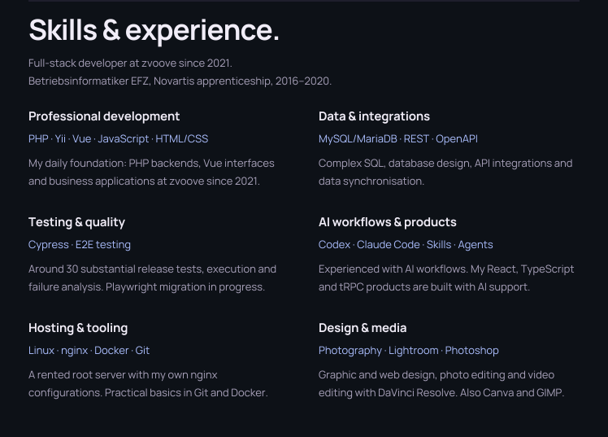

I build PHP & Vue applications at zvoove. After hours, I turn ideas into tools people actually use, chase good light with a camera, and spend probably too much time thinking about cars.







A few personal defaults
[defaults] trailing_commas = always, curiosity = enabled outside_the_editor = camera_or_s5 [handle_with_care] legacy_encoding = ISO-8859-1